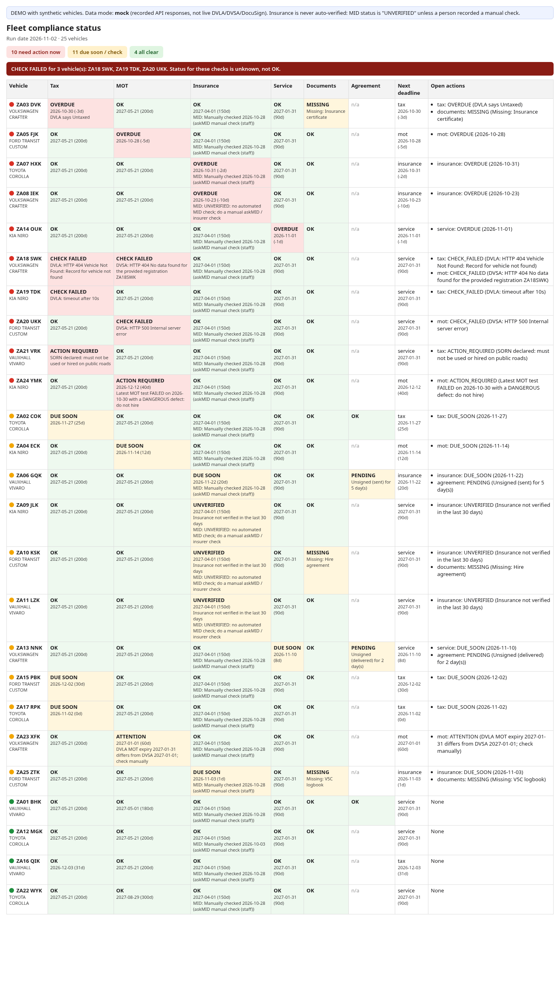

A daily check of a UK rental fleet: road tax and MOT from the official DVLA and DVSA APIs, insurance, servicing, missing documents and unsigned DocuSign hire agreements. It sends tiered reminders and urgent alerts by email and WhatsApp (via n8n), escalates anything nobody acknowledges, logs every check and message, and shows a one-page status dashboard.

25 fictional vehicles, recorded API responses, 40 simulated daily runs. 12/12 unit tests and 11/11 messy-input stress cases pass.
Honest caveats: DVLA, DVSA and DocuSign answers are recorded responses in each API's documented format, not live calls. Nothing is sent; messages go to an outbox file. Insurance is never auto-verified. Not ready for real client data until a live run, a retention policy and an access list are in place.